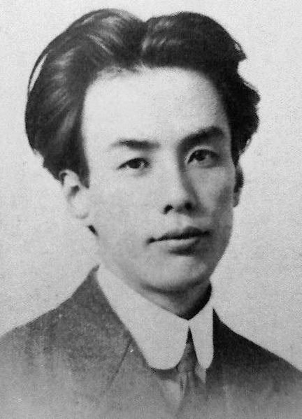

Thông tin chung

- Sinh ngày 1 tháng 3 năm 1892 tại Tokyo
- Thể loại: truyện ngắn, tiểu thuyết
- Được mệnh danh là cha đẻ của truyện ngắn hiện đại Nhật Bản
- Thủ lĩnh của văn phái Tân hiện thực
- Đề tài sáng tác trải rộng trên nhiều bình diện xã hội:
- - Nhật Bản truyền thống
- - Sự tiếp thu văn minh châu Âu thời Minh Trị
- - Đời sống sáng tạo của nghệ sĩ
- - Phật giáo
- - Chính sách kiểm soát báo giới của nhà cầm quyền đương thời
- - ...
- Qua đời ngày 24 tháng 7 năm 1927 khi uống quá liều thuốc Veronal để tự tử